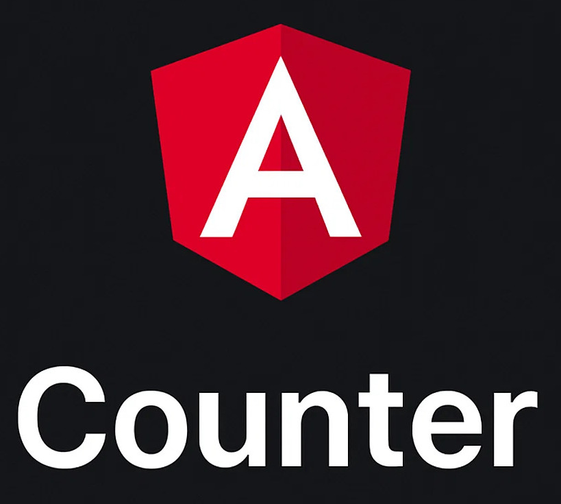
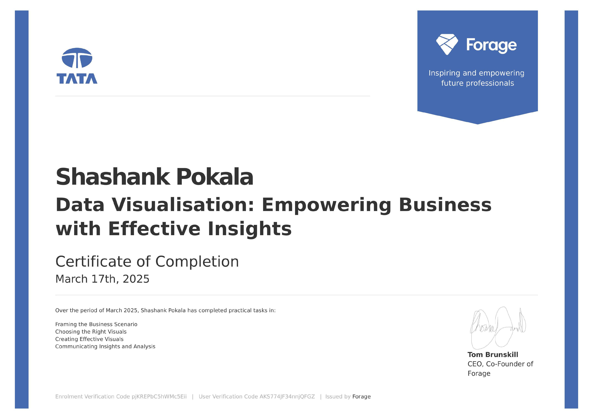

Built an e-commerce revenue analysis pipeline with SQL + DuckDB to track gross, net & final revenue, monthly trends, vendor performance, and profit margins.
Used synthetic data (Faker), advanced SQL, and Python (Pandas/Matplotlib) to generate reports & visuals for decision-ready insights.

Developed a 📊 Multi-Platform Marketing Insights Dashboard for ShopEasy, integrating 🗄️ SQL Server, 🐍 Python sentiment analysis (VADER), and 📈 Power BI to track conversion, engagement, and customer sentiment.
✅ Enabled the marketing team to identify 🎯 funnel bottlenecks, optimize 🚀 high-performing channels, and address 💬 review-driven issues.
⚙️ Delivered an end-to-end analytics solution with interactive dashboards for dynamic, non-technical exploration of key KPIs.
Built an interactive 📈 Power BI dashboard analyzing survey data from 🌍 500+ global data professionals — covering 💼 job titles, 💰 salaries, 💻 programming preferences, ⚖️ work-life balance, and career transitions.
Data cleaning & transformation completed in 🛠️ Power Query with 📊 DAX measures for KPIs and visual storytelling.

Analyzed employee attendance patterns 🧓👨👧🏥 to help HR teams make data-driven decisions
for fair compensation and bonuses. Built in Power BI with SQL Server for data cleaning & transformation.
Key factors include age, family size, lifestyle habits, disciplinary history, and medical reasons.

Built a simple yet functional 🔢 Counter Application using ⚡ Angular and Angular CLI 19.2.9.
Includes increment/decrement functionality with real-time updates, leveraging Angular’s component-based architecture.
Designed for rapid development and testing, with ng serve for local preview, ng build for optimized production builds, and built-in support for unit & e2e testing.
Designed for rapid development and testing, with ng serve for local preview, ng build for optimized production builds, and built-in support for unit & e2e testing.

Built an interactive 🎮 Rock Paper Scissors game using 🌐 HTML, 🎨 CSS, and ⚡ JavaScript.
Play against the 🖥️ computer with real-time scoring 📊, hover effects ✨, and instant feedback 💬.
Color-coded results display whether you win 🏆, lose ❌, or draw 🤝 each round, making gameplay engaging and fun.

Completed the 📊 Tata Group Job Simulation with Tableau, applying real-world data visualization, analysis, and business storytelling to solve CEO & CMO challenges at Tata Insights and Quants (Tata iQ).
Key tasks included drafting executive questions 📝, selecting optimal chart types 📈, performing data cleanup 🧹, and creating four interactive dashboards for revenue trends, top-performing countries, customer rankings, and expansion strategy.
Delivered a 5-minute executive-ready presentation 🎤 highlighting insights, KPIs,and strategic recommendations to optimize decision-making.

Completed the 📊 Deloitte Australia Job Simulation, applying data analytics and forensic technology skills to solve real-world business challenges for Daikibo’s factory operations and workplace equality.
Key tasks included analyzing machine failures ⚙️ across 4 factories using Tableau dashboards 📈, identifying downtime trends ⏳, and classifying workplace Equality Scores in Excel 📊 to assess pay fairness and discrimination levels.
Delivered insights to improve operational efficiency 🚀 and workplace equity ⚖️, reinforcing consulting and problem-solving skills.

Documenting my SQL learning journey 📚 through the LeetCode SQL 50 challenge, practicing queries, mastering database operations, and solving real-world inspired problems.
Covered SQL basics 📝, joins 🔗, aggregations 📊, window functions 🔍, and advanced topics like CTEs, subqueries, and indexing. Solutions include clear explanations for better understanding.
Serving as a personal knowledge base 📌, a reference for learners, and a growing collection of optimized SQL solutions for MySQL, PostgreSQL, and SQL Server.